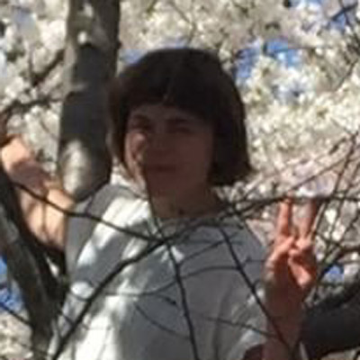

Laurel Schwulst
Designer, Artist, Writer
Laurel Schwulst is interested in the poetic potential of the web.
She helped create this website, The Creative Independent, including its spiral identity.
Currently, she teaches interactive design, practices as Beautiful Company,
and writes perfume reviews as Perfume Area.
Editor's note: In addition to being part of a series with Are.na,
this interview is also part of a series on putting your work out there.